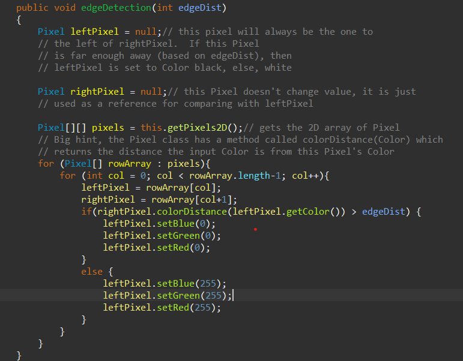
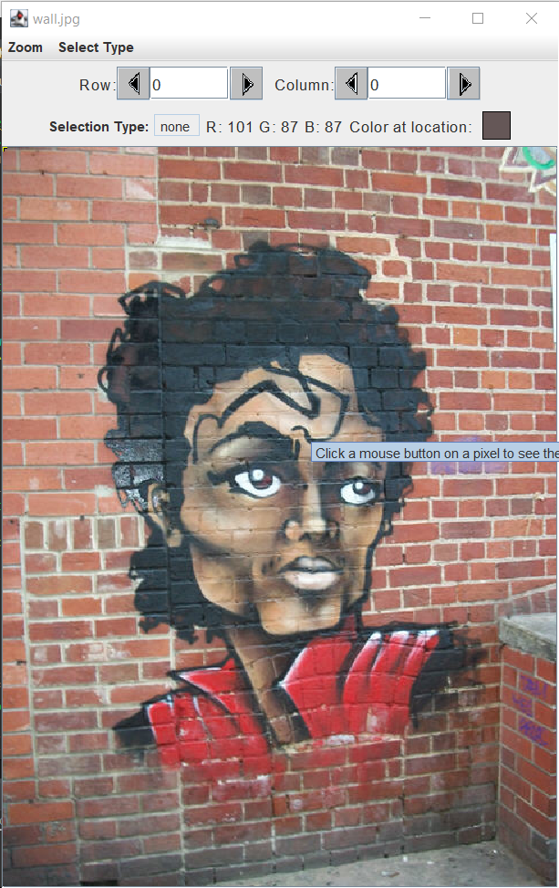
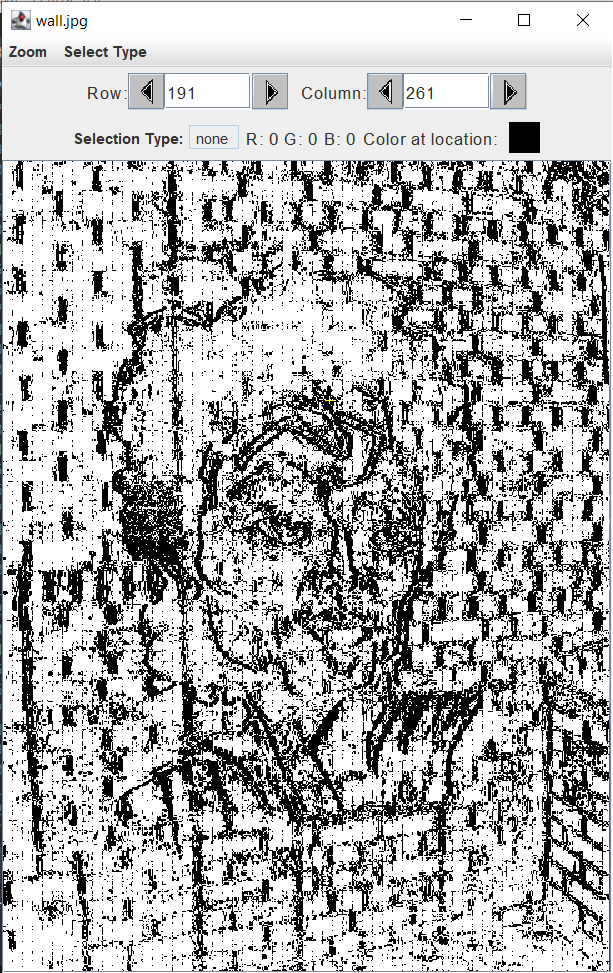
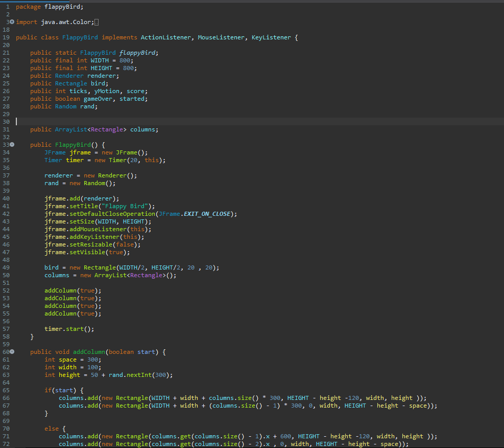

This is where I will store my Java Projects as well as downloads for each project and a small description of each project.
| Project Name | Project Summery | Project Code | Project Output(s) |
|---|---|---|---|
| Edge Detection | Edge Detection is the process in which the program identifies differences in brightness between pixels and either makes a pixel black or white. |
 |
  |
| Flappy Bird | This is a simple recreation of the high score based phone game: Flappy Bird. This was the final project for my AP Computer Science class. This game was made using multiple 2D arrays and a canvas that is |
 |
|
| Filter Program | These functions where made in my AP Computer Science class. This program allows for different filters to be added or removed based on the picture |